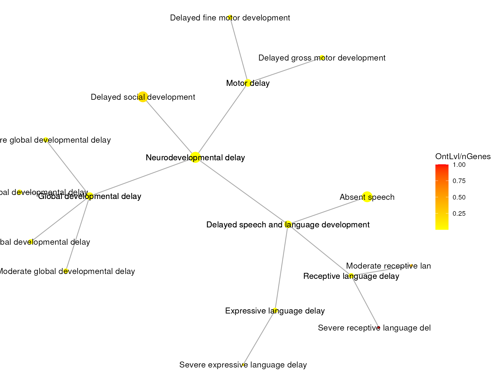

vignettes/HPOExplorer.Rmd
HPOExplorer.RmdWithin R:
if (!require("remotes")) install.packages("remotes")
if (!require("HPOExplorer")) remotes::install_github("ovrhuman/HPOExplorer")The HPOExplorer package provides useful functions for working with the Human Phenotype Ontology (HPO). The main HPO ontology object comes with the ontologyIndex R package.
This tutorial will focus on creating an interactive network plot of a subset of the HPO, where disease descriptions and results from your analysis appear in a hover box when a specific phenotype is selected from the graph.
To run the following examples we need the HPO data its self, and the phenotype_to_genes.txt file (gene annotations) from the HPO.
library(ontologyIndex)
data(hpo)
phenotype_to_genes <- load_phenotype_to_genes()The figure we are going to create is a bit arbitrary, but it should outline the main features of the package. First we are going to get a subset of HPO terms to plot. We will select phenotypes that have gene annotations (in phenotype_to_genes.txt), and are descendants of “Neurodevelopmental delay”.
# Get HPO ID of "Neurodevelopmental delay
Neuro_delay_ID <- get_hpo_termID_direct(hpo = hpo,
phenotype = "Neurodevelopmental delay")
# Get descendants that have gene annotations
Neuro_delay_descendants <- phenotype_to_genes[phenotype_to_genes$ID %in% get_descendants(hpo,Neuro_delay_ID),]To create the network object we need a dataframe of the selected phenotypes with columns for associated parameters. We will be able to map these parameters onto the colour of the nodes in the figure. We can also use them to subset the selected phenotypes further.
Typically, these parameters would be results from an analysis you have done. For example, you may have p values associated with each phenotype and you might want to only show phenotypes where p<0.05, or use them to colour the nodes, or have the p values displayed in the hover box.
For this example we will have to make up a parameter for demonstration purposes. We are going to divide ontology level of the phenotypes by the number of associated genes. We will also include the ontology level its self and the disease description.
HPOExplorer has some useful functions for obtaining the ontology level of terms. Ontology level describes the number of generations of descendants vertically below a term (note that this is not the same as the raw number of descendants which is also capturing the horizontal spread of branching off terms). For example “Phenotypic abnormality” is high up in the HPO and all other disease phenotypes are descendants of it. It is at ontology level 13. A term with no descendants is at ontology level 0.
phenos = data.frame()
for (p in unique(Neuro_delay_descendants$Phenotype)) {
id <- get_hpo_termID(phenotype = p,
phenotype_to_genes = phenotype_to_genes)
ontLvl_geneCount_ratio <- (get_ont_level(hpo = hpo,
term_ids = p) + 1)/length(get_gene_list(p,phenotype_to_genes))
description <- get_term_definition(ontologyId = id,
line_length = 10)
phenos <- rbind(phenos,
data.frame("Phenotype"=p,
"HPO_Id"=id,
"ontLvl_geneCount_ratio"=ontLvl_geneCount_ratio,
"description"=description))
}We used the get_hpo_termID function to get the HPO Id of each term, and length(get_gene_list(p,phenotype_to_genes)) to get the number of genes.
The hoverbox is useful for making interactive plots in shiny apps. It allows the user to hover their mouse over a phenotype and see a description of it and any results relating to it from your analysis. This function generates the hoverbox based on selected columns from the dataframe above. We then add these to a new column in the phenos dataframe called hover_box.
hoverBox = c()
for (p in unique(phenos$Phenotype)) {
hoverBox <- append(hoverBox,
make_hoverbox(p,
phenos,
columns = c("HPO_Id",
"ontLvl_geneCount_ratio",
"description"),
labels = c("ID",
"Ont.Lvl/n.genes",
"Description")))
}
phenos$hover<- hoverBox
print("Here is an example hover box from this:")## [1] "Here is an example hover box from this:"
cat(phenos$hover[1])## Delayed speech and language development
## ID: HP:0000750
## Ont.Lvl/n.genes: 0.000878734622144112
## Description: A degree of language development that is significantly below
## the norm for a child of a specified age.In order to generate the plot we need to coerse the phenos dataframe in to a network object. We use the network package to do this. It is a way to represent the information about each individual phenotype, as well as the types of relationships between them, all in one data structure.
To set this up we use adjacency_matrix first to create a adjacency matrix of all phenotypes to be plotted. The rows and columns are the phenotypes. If phenotype[i] is a child of phenotype[j] the value in the matrix at matrix[i,j] will be 1. If the two phenotypes are not adjacent to eachother the value will be 0.
Once we have this adjacecny matrix that represents the relationships between phenotypes, we use make_network_object to coerce it into a format suitable for plotting. Essentially this converts the matrix into a dataframe and gives (x,y) coodinates for each data point so that they can be plotted using ggplot.
The colour_column argument is where you choose the column name from the phenos dataframe which you want to be mapped to the colour of the nodes. In this case we created the family arbitrary variable of ontology level to number of associated genes ratio and its column name is ontLvl_geneCount_ratio.
phenoAdj <- adjacency_matrix(unique(phenos$HPO_Id), hpo)
phenoNet <- make_network_object(phenos,phenoAdj, hpo, colour_column = "ontLvl_geneCount_ratio")Then we can make the plot with ggnetwork_plot. Again you need to give the column name for the variable you want mapped to colour in the colour_column argument. We also need to provide a nice label for this column in colour_label. This will be used for the figure legend.
plt <- ggnetwork_plot(phenoNet = phenoNet,
colour_column = "ontLvl_geneCount_ratio",
colour_label = "OntLvl/nGenes")
print(plt)
In cases where we are making a shiny app or html document we may want to include the interactive hoverbox. This allows the user to hover their mouse over a phenotype to get extra information about it. For this we use the plotly library.
if (!require("plotly")) install.packages("plotly")
plotly::ggplotly(plt, tooltip = "hover")
utils::sessionInfo()## R Under development (unstable) (2021-11-04 r81141)
## Platform: x86_64-pc-linux-gnu (64-bit)
## Running under: Ubuntu 20.04.3 LTS
##
## Matrix products: default
## BLAS/LAPACK: /usr/lib/x86_64-linux-gnu/openblas-pthread/libopenblasp-r0.3.8.so
##
## locale:
## [1] LC_CTYPE=en_US.UTF-8 LC_NUMERIC=C
## [3] LC_TIME=en_US.UTF-8 LC_COLLATE=en_US.UTF-8
## [5] LC_MONETARY=en_US.UTF-8 LC_MESSAGES=C
## [7] LC_PAPER=en_US.UTF-8 LC_NAME=C
## [9] LC_ADDRESS=C LC_TELEPHONE=C
## [11] LC_MEASUREMENT=en_US.UTF-8 LC_IDENTIFICATION=C
##
## attached base packages:
## [1] stats graphics grDevices utils datasets methods base
##
## other attached packages:
## [1] ontologyIndex_2.7 HPOExplorer_0.99.1 BiocStyle_2.23.0
##
## loaded via a namespace (and not attached):
## [1] network_1.17.1 tidyselect_1.1.1 xfun_0.28
## [4] bslib_0.3.1 purrr_0.3.4 sna_2.6
## [7] lattice_0.20-45 colorspace_2.0-2 vctrs_0.3.8
## [10] generics_0.1.1 htmltools_0.5.2 yaml_2.2.1
## [13] utf8_1.2.2 rlang_0.4.12 pkgdown_1.9000.9000.9000
## [16] jquerylib_0.1.4 pillar_1.6.4 glue_1.5.0
## [19] ggnetwork_0.5.10 lifecycle_1.0.1 stringr_1.4.0
## [22] munsell_0.5.0 gtable_0.3.0 ragg_1.2.0
## [25] coda_0.19-4 memoise_2.0.0 evaluate_0.14
## [28] labeling_0.4.2 knitr_1.36 fastmap_1.1.0
## [31] curl_4.3.2 fansi_0.5.0 highr_0.9
## [34] scales_1.1.1 BiocManager_1.30.16 cachem_1.0.6
## [37] desc_1.4.0 jsonlite_1.7.2 farver_2.1.0
## [40] systemfonts_1.0.3 fs_1.5.0 textshaping_0.3.6
## [43] ggplot2_3.3.5 digest_0.6.28 stringi_1.7.5
## [46] bookdown_0.24 dplyr_1.0.7 grid_4.2.0
## [49] rprojroot_2.0.2 tools_4.2.0 magrittr_2.0.1
## [52] sass_0.4.0 tibble_3.1.6 wesanderson_0.3.6
## [55] crayon_1.4.2 pkgconfig_2.0.3 ellipsis_0.3.2
## [58] rmarkdown_2.11 httr_1.4.2 statnet.common_4.5.0
## [61] R6_2.5.1 compiler_4.2.0